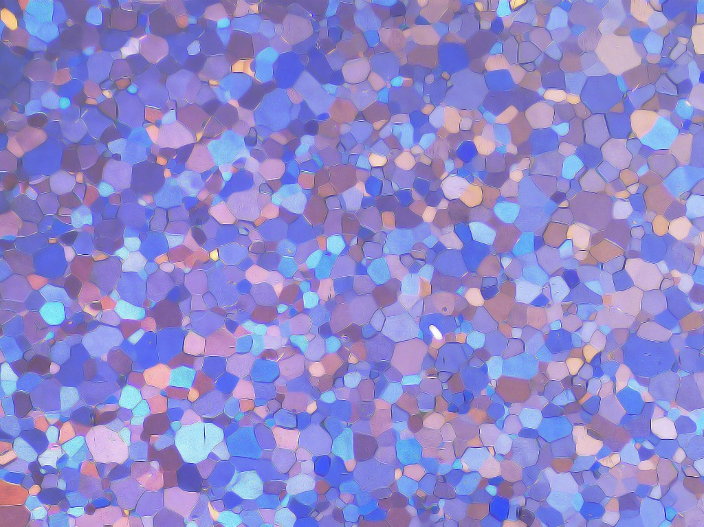
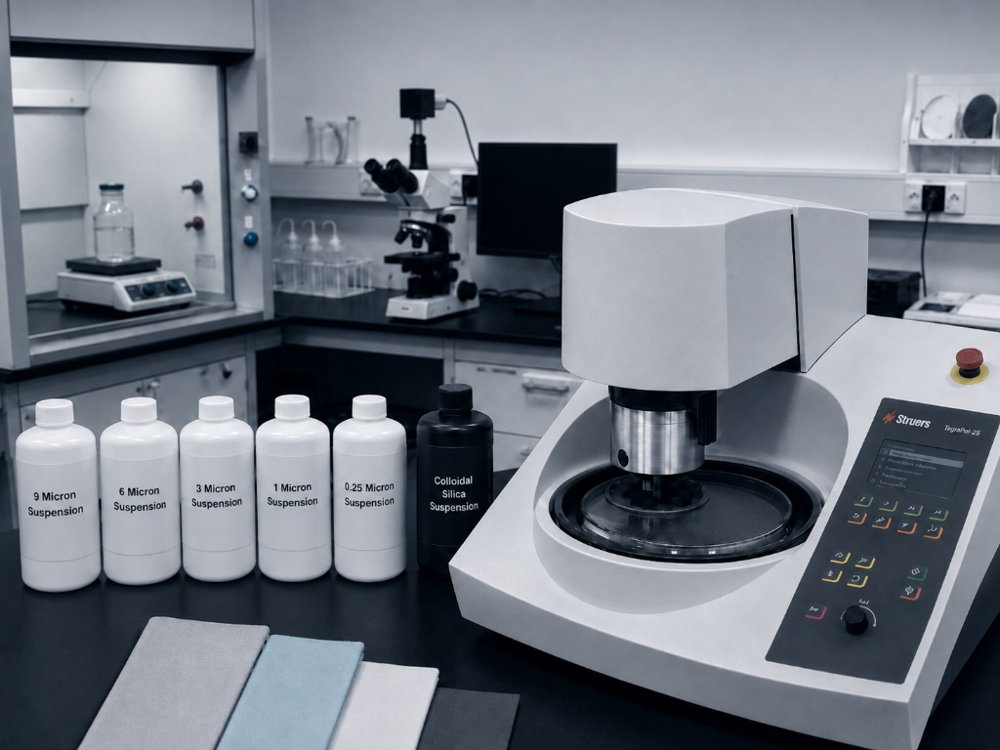
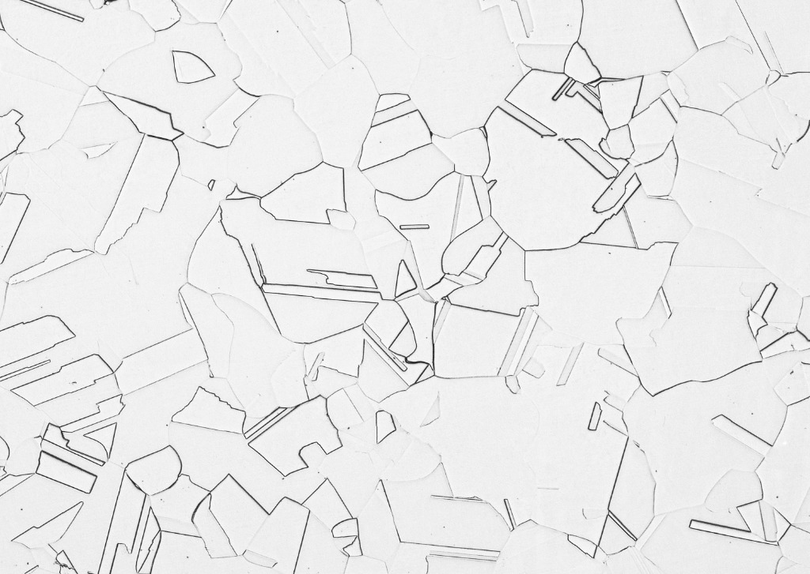
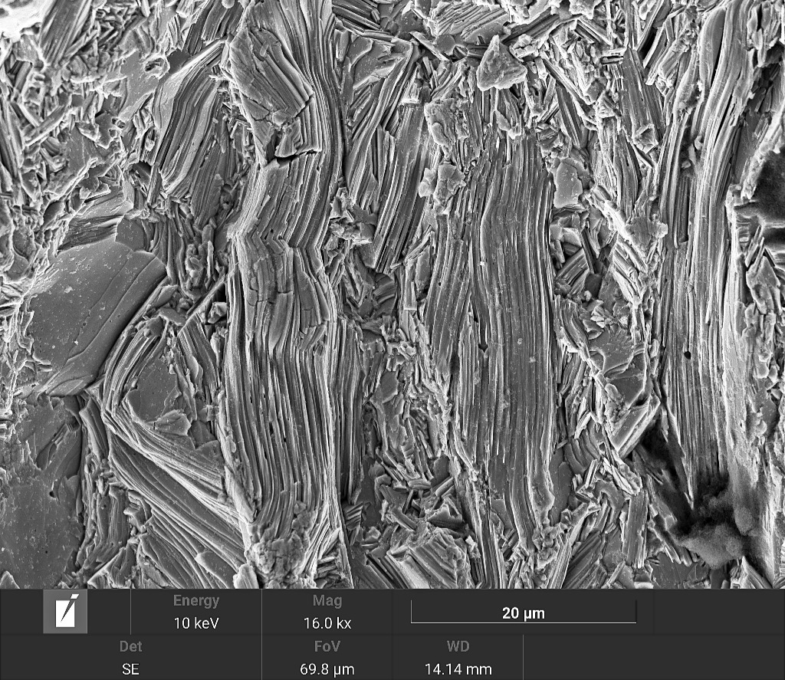
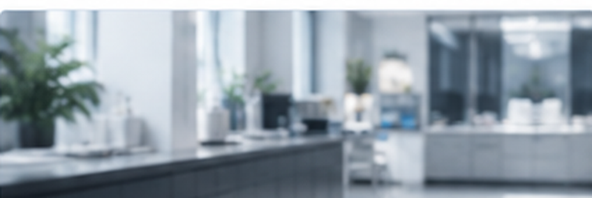
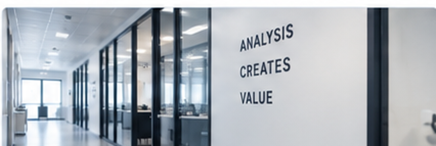

전처리에서부터 해석까지, 재료 분석의 전 과정을
하나의 흐름으로 연결합니다.
재료에 나타난 미세조직의 변화와 특성을 관찰하고,
그 원인을 분석합니다.
관찰과 측정 결과를 연계해 조직·특성 간의 상관관계를
해석하는 통합 솔루션을 제공합니다.



문의부터 결과 보고까지, 체계적인 절차로 진행됩니다.

시편 전처리는 분석 결과의 품질을 좌우하는 중요한 공정이지만, 많은 시간과 숙련이 필요해 연구기관과 기업이 지속적으로 감당해야 하는 부담이 됩니다.
ELAB은 다양한 재료와 분석 경험을 바탕으로 이러한 부담을 줄이고, 분석 목적에 맞는 전처리부터 미세조직 관찰, 특성 평가, 그리고 결함·손상 원인 분석까지 통합된 기술 서비스를 제공합니다.

절단·마운팅·연마·에칭 등 분석 목적에 맞는 전처리 수행
광학현미경 및 경도 측정을 통한 특성 평가

SEM/EDS, EPMA, EBSD 등 목적에 맞는 분석 기법 연계
분석 결과를 바탕으로 결함 및 손상 원인을 검토
필요 시 공인시험기관 및 분야별 전문가와 연계
미세조직 관찰, SEM·EDS, 손상 원인 분석 등
ELAB이 수행한 실제 기술 분석 사례를 확인해보세요.
광학현미경(OM)을 이용해 금속 조직을 관찰하고
결정립 크기, 상(Phase) 분포, 기공·균열·개재물 및
열처리·가공에 따른 조직 특성을 평가합니다.
대형 소재의 전면 Macro Etching 및 단면 관찰을 통해
주조·단조 조직의 분포와 균일성을 확인하고
내부 건전성과 거시적 결함을 평가합니다.
단조·성형 부품의 단류선(Flow Line)을 관찰해
가공 유동 패턴과 단류선의 연속성을 확인하고
이상 및 결함 여부를 평가합니다.
주사전자현미경(SEM)을 활용해 고배율 미세조직과
미세 상, 석출물, 기공 등의 형상과 분포를
정밀하게 관찰합니다.
에너지 분산형 X선 분광기(EDS)를 활용해
국부 영역의 성분 확인과 원소 Mapping을 수행하고
미세조직 및 결함부의 성분 특성을 분석합니다.
EPMA를 활용해 미세 영역 원소의 정성·정량 분석과
원소 Mapping, Line Profile을 수행하고
편석·확산층·계면부의 조성 변화를 평가합니다.
균열·파손·부식 등 손상 부위의 조직과 파단면을 분석해
손상 형태와 진행 경로를 확인하고
발생 원인을 종합적으로 검토합니다.
용접부 단면의 건전성과 미세조직을 평가하고
HAZ 및 용착금속의 조직·성분 특성을 확인해
용접 결함과 파손 원인을 종합적으로 분석합니다.
가동 설비 표면을 현장에서 연마·에칭한 뒤
Replica Film을 채취해 미세조직과 탄화물 분포를 확인하고
Creep Cavity 등 열화 상태를 비파괴적으로 평가합니다.